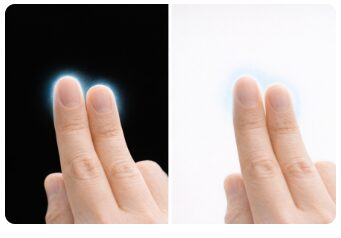
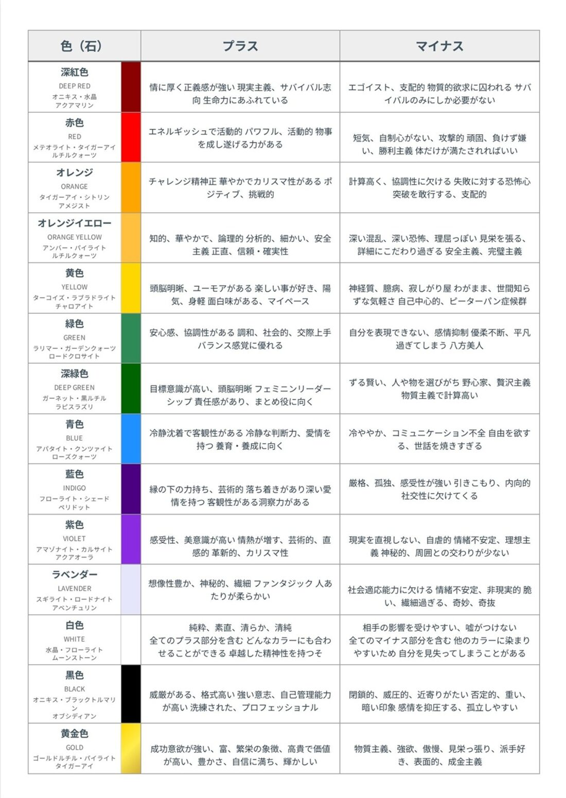

オーラを視る方法
パーフェクトガイド
占い初心者のための、オーラ性格鑑定はじめの一歩
☆ このガイドについて
このガイドは、見えたオーラの色から、その人の性格を鑑定できるようになることを目的とした教材です。オーラとは、生命体や物体が発している色のついた「光のエネルギー」のことです。実際には、第１〜７チャクラの活性度合いによって色が変わるとされ、その人が発している周波数を映し出しているといわれています。
「視えるかどうか」は特別な才能の有無で決まるものではありません。見えやすい環境づくりと、見えやすい体の部位を知り、正しい手順で練習を積み重ねることで、多くの人が少しずつ視えるようになっていきます。このガイドでは、その手順を初心者にも分かるように一つずつ解説し、最後は「ワーク」で実際にオーラ性格鑑定ができるところまでご案内します。
- オーラという言葉は知っているが、実際にどう見ればいいか分からない
- 「見える人」と「見えない人」の違いが気になる
- 見えた色から、自分や相手の性格を鑑定できるようになりたい
- まずは自分の指先や身近な人で試してみたい
🔷 オーラの見方・練習する時の５つのコツ
オーラを見るには「見えやすい環境づくり」と「割と見やすい体の部位」を知っておく必要があります。まずは以下の5つのポイントを押さえておきましょう。
- エネルギーワークを日々実践する
- 背景色は「白系」または「黒系」の単調色にする
- 見えやすい部位は「指先」または「肩から上の上半身」
- 対象物は側面を見る
- 軽く寄り目にして、軽くぼやけるくらいで見る
この後は、それぞれのポイントについて詳しく解説していきます。
① 背景色は黒か白
オーラを見るときにまず気をつけたいのが、「オーラが見えやすい環境であるかどうか」です。
背景が雑多な色をしていると、それだけでオーラは見えにくくなります。黒や白など単調な色を背景にするのがおすすめです。家の中であれば、壁や襖・障子などを背景にすると見やすくなります。

黒背景・白背景、どちらでも指先の縁に薄い光の膜のようなものが見えているのが分かります
上の写真のように、黒背景では光って見えやすく、白背景ではやや控えめに、輪郭がにじむように見える傾向があります。どちらが見やすいかは人によって異なるので、両方試して自分に合う方を見つけることが大切です。
- 黒い方が見やすい人、白い方が見やすい人がいて、これは個人差があります
- まずは黒背景で試し、見えにくければ白背景に変えてみましょう
- 慣れてくると背景を選ばなくても見えるようになる人もいます
※オーラの見過ぎは脳が疲れやすくなる場合があります。練習は短時間から始め、無理をしないようにしましょう。
② 見えやすい体の部位
オーラには「見えやすい部位」があります。ここでは、相手がいなくても一人で練習できる「自分の指先」を使った練習方法をご紹介します。
オーラを見る時は指先の「縁」を見る
オーラは体の縁（輪郭）に現れるため、指全体ではなく指の縁を見るように意識するのがコツです。指全体を直視すると、かえってオーラは見えにくくなります。
指先の縁をジッと凝視するのではなく、焦点を合わせずに軽く寄り目をして、ボーッと見るような感覚で見つめてください。すると、指が若干二重に見えるようになります。この状態をそのままキープしましょう。
- 白か黒の背景（壁・布・厚紙など）の前に片手を出す
- 指先を見つめながら、指先よりも10〜20cmほど手前（自分の目に近い側）に視線の焦点を置くイメージで、軽く寄り目にする
- 指の輪郭がぼんやり二重に見えてきたら、そのまま数十秒〜数分キープする
- まばたきをしても構わないので、焦らずリラックスして続ける
※「寄り目」は本来、近くのものを見るときの目の動きです。指先の奥（向こう側）に焦点を合わせようとすると寄り目にならず、逆に視線が開いてしまうので注意してください。
はじめは何も見えないかもしれませんが、繰り返すうちに白いオーラが見えるようになっていきます。見慣れていくと、この「寄り目にする」という過程を踏まなくても自然に見えるようになる人もいます。
③ オーラの見えはじめと見慣れた時の違い
オーラの見え方には段階があります。練習量に応じてどのように変化していくのかを知っておくと、上達の目安になります。
見えはじめ：白い縁取り・白い湯気
オーラが見え始めたばかりの頃は、「半透明の白い縁取り」か「半透明の白い湯気」のどちらかのように見えることが多いです。どちらのタイプで見えるかは個人差があります。（①でご紹介した指先の写真が、まさにこの「白い縁取り」の状態です）
この白い縁取りや白い湯気がオーラの原型になります。これらを何度も見ているうちに、少しずつ色が付いて見えるようになっていきます。
見慣れた後：色が重なって見える
色が見えるようになり、さらに練習を重ねると、オーラが大きくなり、色も一種類ではなく数種類が重なって見えるようになります。

オーラは横に広がっているのではなく、縦長の卵のような形をしています。上に行くにつれてだんだん細くなっていくのが一般的なイメージです。

エネルギーワークを続けることで、次第に大きなオーラが見えるようになった例
④ どのくらいでオーラが見えるようになる？
見える早さには個人差があります。エネルギーワークでチャクラクリーニングを毎日行っている人ほど、見えるのが早い傾向にあるといわれています。早い人は数分で白い縁や湯気が見え始めますが、何度試しても見えにくい人もいます。
- 一度に長時間頑張るより、短時間でも毎日続ける方が定着しやすい
- 見えない日があっても焦らず、コンディションを整えて再挑戦する
- 一度見えるようになっても、練習にブランクがあると再び集中力が必要になることがある
- 常に見える状態を保ちたい場合は、日常的に「見る癖」をつけておくとよい
経験的に、呼吸法（瞑想）を伴うエネルギーワークを実践すると自然と身についていくといわれています。焦らず、ゆっくりと練習を積み重ねていきましょう。
⑤ オーラの色でわかる健康・感情
オーラの色からは、その人の健康状態や感情の状態が読み取れるといわれています。
- 健康な人：赤や黄色など、明るく綺麗な色のオーラ
- 元気のない人：グレーにくすんだオーラ
- 怒っている時：透明感のない、ドス黒い赤色のオーラ
- 正義感に燃えている時：燃え盛る炎のような赤色のオーラ
- 人が死に接している時：黒色のオーラ
オーラの色は深紅色、赤色、オレンジ、黄色、緑色、青色、紫色、白色、黒色、黄金色など人によってさまざまで、見え方にも個人差があります。それぞれの色が持つ性格傾向は「オーラ一覧表」タブに詳しくまとめていますので、まずは色の傾向を知識として押さえておき、実際に見えた色と照らし合わせていくとよいでしょう。
色ごとの性格の詳しい一覧（プラス面・マイナス面）は、「オーラ一覧表」タブに一つにまとめています。印刷して鑑定時にご利用いただけます。資料に頼りすぎず、想念をキャッチして性格を掴むことも忘れないようにしましょう。
⑥ そもそもオーラとは？
人間は肉体・霊体・エーテル体と呼ばれる幽体から成り立っているとされ、このエーテル体のことを「オーラ」と呼びます。オーラを見ることで、その人の心境・感情・健康面などを読み取ることができるといわれています。
オーラは人を囲み、頭部から上に離れるにつれて細くなる、卵のような形をしています。オーラには大きく分けて2つの種類があります。
その人のベースとなる感情や性格的な特徴を表すオーラです。その人のメインとなるチャクラに影響を受けます。ベースとなる色は、環境の大きな変化や病気などがない限り、基本的には変わらない傾向にあります。
現在の一時的な健康状態や精神状態を表すオーラです。体の前後左右、さまざまな場所から出ており、暖色系の色ならおおむね健康、寒色系やくすんだ色は疲れ・不調のサインとされています。
基軸オーラを見ずに、基軸オーラを覆うオーラだけでその人を判断しないようにしましょう。一時的な状態と、その人本来のベースを混同しないことが大切です。
【上級編】オーラ構造と心のカラダ
ここからは、もう少しオーラについて深掘りしたい方向けの内容です。俗にいうオーラ（心のカラダ）は、上位構造が下位構造をコントロールするという関係になっています。
私たちの肉体には、次の7つのエネルギー体が重なっているとされています。
エーテル体／アストラル体／メンタル体／コーザル体／ブッディ体／アートマ体／モナド体
肉体を合わせると、合計8つの多重構造・多次元構造でできているとされます。肉体からモナド体に向かうにつれて次元が高くなり、上位構造が下位構造をすべて包み込んでいる構造になっています。
洋服を重ね着しているイメージではなく、エーテル体は肉体の部分も含めて存在し、アストラル体はエーテル体と肉体の部分も含めて存在する、というように内側の構造を包含しながら重なっているイメージです。そして、メンタル体はアストラル体を、アストラル体はエーテル体を、エーテル体は肉体をコントロールするというように、上位構造が下位構造に影響を与えているとされます。
ここでは、実践的に理解しておきたい「肉体〜メンタル体」までを見ていきましょう。


肉体を中心に、エーテル体・アストラル体・メンタル体が内側を包み込むように重なっている構造イメージ
肉体
物質として存在する体のことで、普段私たちが認識している体そのものです。肉体がある次元を「物理次元」と呼びます。

エーテル体（＝オーラ）
エーテル体はオーラと呼ばれる「ココロの体」のことです。エーテル体がある次元を「エーテル次元」と呼びます。肉体から30cmほどの厚みで、熱を発しながら蒸気のように流れているとされます。
- 子どもの頃は冬でも薄着で平気だったが、大人になって厚着が必要になった
- 若い頃は裸足で平気だったが、今は靴下がないと冷える
- 歳を重ねるごとに体が冷えやすくなってきた
エーテル体は生命エネルギーそのものです。若いうちは生命エネルギーに満ちているため体温が高く、歳を重ねると生命エネルギーが少なくなるにつれて体温も下がっていくといわれています。


波動（エネルギーワーク）を行うと、肉体の上位構造にあるエーテル体が活性化し、結果として肉体にも良い影響が及ぶとされています。「ご飯は食べなくても波動はやりなさい」といわれることがあるのは、エーテル体の方が肉体より上位構造にあり、エーテル体が整うことで下位構造である肉体にも良い影響が及ぶためだと考えられています。
アストラル体
アストラル体は「心の体」で、アストラル体がある次元を「アストラル次元」と呼びます。感情やイメージによって形成されており、ポジティブな感情・イメージは心をきれいにし、下位構造であるエーテル体・肉体も活性化させますが、ネガティブな感情・イメージは心を汚し、下位構造も乱れて病気につながるとされます。

- 失恋してご飯がのどを通らない
- 大きなショックを受けて食欲がない
- 緊張して食事がのどを通らない
感情によって生じる不調は、「五行」の考え方でも説明されます。五行とは、万物は木・火・土・金・水の5つの要素からできており、互いに影響し合っているという古代中国の思想です。お互いを助け合う関係を「相生」、お互いを打ち滅ぼす関係を「相克（そうこく）」と呼びます。
- 怒ってばかりいる → 肝（肝臓など）が悪くなりやすい
- イライラしてばかりいる → 心（心包）や小腸（三焦）の不調につながりやすい
- 考えすぎて思い煩う → 脾や胃の不調につながりやすい
- 悲しみの感情が強い → 肺や大腸の不調につながりやすい
- 恐れおののいてばかりいる → 腎や膀胱の不調につながりやすい


アストラル体は、人間が死んだ後に幽体となる部分でもあります。死後、肉体とアストラル体をつないでいたエーテル体が剥がれ、アストラル体が幽体として肉体から離れるとされ、この幽体が輪廻転生の際に来世のアストラル体になるといわれています。今回の人生でアストラル体が汚れたまま死ぬと、来世もその汚れを背負って生まれることになるとされるため、普段からポジティブな感情やイメージを持ち、アストラル体をきれいに保つことが大切だといわれています。
メンタル体
メンタル体は「魂の体」で、メンタル体がある次元を「メンタル次元」と呼びます。やる気や意志の次元にあたり、言葉や思考によって形成されています。ポジティブな言葉・思考は魂を輝かせ、下位構造も活性化させますが、ネガティブな言葉・思考は魂を汚し、下位構造も乱れて病気につながるとされます。

- 好きな人ができてやる気があるとご飯を食べなくても元気
- 仕事に一生懸命でご飯を食べなくても頑張れる
- 勉強のやる気があると、ご飯を食べなくても平気


メンタル体には、過去の辛い経験やトラウマが映ることがあるとされ（場合によってはアストラル体に映ることもあります）、これを放置すると来世にも影響が及ぶといわれています。日々の中で、少しずつエネルギーワークを行い、整えていくことが大切です。
🧭 実践の進め方まとめ
ここまでの内容を、実際に練習する際の手順としてまとめます。
- 白または黒の単調な背景を用意する（壁・布・厚紙など）
- 片手を背景の前に出し、指先の「縁」に視線を向ける
- 焦点を合わせず、軽く寄り目にしてボーッと見る
- 指が少し二重に見える状態のまま、無理のない範囲でキープする
- 白い縁取りや白い湯気が見えたら、そのまま観察を続ける
- 見えた部位・色・変化を、忘れないうちにワークシートに記録する
- 「見える／見えない」を評価にせず、出てきたものをそのまま記録する
- 体調が悪い日や疲れが強い日は無理をしない
- 短時間でもよいので、日々コツコツ続けることを優先する
- 見えた内容を人に伝えるときは、断定せず「〜のように感じます」と伝える
練習の記録は、次の「ワーク」タブから、選択式・入力式のどちらかで記入できます。
オーラ性格鑑定ワーク
見えたオーラの色から、性格を鑑定してみましょう
✍️ ワークシート：オーラ性格鑑定
実際にオーラを見た（見ようとした）あとの気づきを入力すると、その色が示す長所・短所・顕在意識・中層意識・潜在意識までを踏まえた性格鑑定結果が表示されます。「選択式」はタップだけで簡単に、「入力式」は自分の言葉で自由に記録したい方向けです。どちらで記録しても構いません。
オーラ性格鑑定結果
記録をやり直す下のテキストには、今回の内容をもとにしたChatGPT用の鑑定プロンプトが自動で作成されています。コピーしてChatGPTに貼り付けるだけで、より詳しいオーラ性格鑑定文を作成してもらえます。
📌 鑑定するときのポイント
- 「当たっているか」ではなく、見えたものをそのまま記録することを優先しましょう
- 色が混ざって見えた場合は、無理に一つに絞らず、感じたままを残してください
- 鑑定結果は「必ずそうだ」と決めつけず、あくまで傾向の一つとして受け取りましょう
- 人に鑑定結果を伝えるときは、断定せず「〜の傾向があるようです」とやわらかく伝えるようにしましょう
- 練習前後は軽く深呼吸をし、終わったら「ここまで」と区切りをつけましょう
- 体調が優れない日は、無理に練習をしないようにしてください
オーラ色 一覧表
見えた色から、性格の傾向を確認してみましょう
🎨 オーラ別性格 一覧表
この一覧表は、オーラ性格鑑定の基礎となるマスターデータです。「ワーク」タブの鑑定結果も、この表のプラス面・マイナス面をもとに作成しています。色が持つ意味は流派によって解釈の幅がありますが、この教材内での鑑定は、すべてこの一覧表を基準にしています。
| 色（石） | プラス | マイナス |
|---|---|---|
深紅色 DEEP RED オニキス・水晶・アクアマリン |
情に厚く正義感が強い 現実主義、サバイバル志向 生命力にあふれている | エゴイスト、支配的 物質的欲求に囚われる サバイバルのみにしか必要がない |
赤色 RED メテオライト・タイガーアイ・ルチルクォーツ |
エネルギッシュで活動的 パワフル、活動的 物事を成し遂げる力がある | 短気、自制心がない、攻撃的 頑固、負けず嫌い 勝利主義 体だけが満たされればいい |
オレンジ ORANGE タイガーアイ・シトリン・アメジスト |
チャレンジ精神 華やかでカリスマ性がある ポジティブ、挑戦的 | 計算高く、協調性に欠ける 失敗に対する恐怖心 突破を敢行する、支配的 |
オレンジイエロー ORANGE YELLOW アンバー・パイライト・ルチルクォーツ |
知的、華やかで、論理的分析的、細かい、安全主義 正直、信頼・確実性 | 深い混乱、深い恐怖、理屈っぽい、見栄を張る 詳細にこだわり過ぎる 安全主義、完璧主義 |
黄色 YELLOW ターコイズ・ラブラドライト・チャロアイト |
頭脳明晰、ユーモアがある 楽しい事が好き、陽気、身軽 面白味がある、マイペース | 神経質、臆病、寂しがり屋 わがまま、世間知らずな気軽さ 自己中心的、ピーターパン症候群 |
緑色 GREEN ラリマー・ガーデンクォーツ・ロードクロサイト |
安心感、協調性がある 調和、社会的、交際上手 バランス感覚に優れる | 自分を表現できない、感情抑制 優柔不断、平凡過ぎてしまう 八方美人 |
深緑色 DEEP GREEN ガーネット・黒ルチル・ラピスラズリ |
目標意識が高い、頭脳明晰 フェミニンリーダーシップ 責任感があり、まとめ役に向く | ずる賢い、人や物を選びがち 野心家、贅沢主義 物質主義で計算高い |
青色 BLUE アパタイト・クンツァイト・ローズクォーツ |
冷静沈着で客観性がある 冷静な判断力・愛情を持つ 養育・養成に向く | 冷ややか、コミュニケーション不全 自由を欲する、世話を焼きすぎる |
藍色 INDIGO フローライト・シェードペリドット |
縁の下の力持ち、芸術的 落ち着きがあり深い愛情を持つ 客観性がある、洞察力がある | 厳格、孤独、感受性が強い 引きこもり、内向的 社交性に欠けてくる |
紫色 VIOLET アマゾナイト・カルサイト・アクアオーラ |
感受性、美意識が高い 情熱が増す、芸術的、直感的 革新的、カリスマ性 | 現実を直視しない、自虐的 情緒不安定、理想主義 神秘的、周囲との交わりが少ない |
ラベンダー LAVENDER スギライト・ロードナイト・アベンチュリン |
想像性豊か、神秘的、繊細 ファンタジック 人あたりが柔らかい | 社会適応能力に欠ける 情緒不安定、非現実的 脆い、繊細過ぎる、奇妙、奇抜 |
白色 WHITE 水晶・フローライト・ムーンストーン |
純粋、素直、清らか、清純 全てのプラス部分を含む どんなカラーにも合わせることができる 卓越した精神性を持つ | 相手の影響を受けやすい、嘘がつけない 全てのマイナス部分を含む 他のカラーに染まりやすいため自分を見失ってしまうことがある |
黒色 BLACK オニキス・ブラックトルマリン・オブシディアン |
威厳がある、格式高い、強い意志 自己管理能力が高い 洗練された、プロフェッショナル | 閉鎖的、威圧的、近寄りたい否定的、重い 暗い印象、感情を抑圧する 孤立しやすい |
黄金色 GOLD ゴールドルチル・パイライト・タイガーアイ |
成功意欲が強い、富、繁栄の象徴 高貴で価値が高い、豊かさ、自信に満ち、輝かしい | 物質主義、強欲、傲慢、見栄っ張り、派手好き、表面的、成金主義 |
元資料の画像版はこちら（保存・印刷用）

🧩 基軸オーラ／覆うオーラの見分け方
その人本来のベースとなる性格・感情を表す色。環境の大きな変化や病気などがない限り、基本的には変わりにくい色です。
一時的な健康状態・精神状態を表す色。暖色系ならおおむね健康、寒色系やくすんだ色は疲れ・不調のサインとされます。
鑑定の際は、この2つを混同しないよう注意しましょう。一時的に見えたグレーやくすみだけで、その人の本質を判断しないことが大切です。